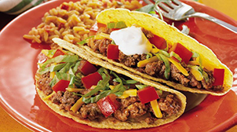

Quick Time Tacos!
Looking for resturant quality tacos in your own home?
In less than 20 minutes, you can make them yourself!
Save a trip to Taco Bell, make Quick Time Tacos!
Serves 3-4 people
A recipe by Elijah James Bogdansky
These quick and easy tacos are a great at home recipe for beginers and experts alike. Minimal preperation, less than 20 minutes cook time, and less money than you would spend at your favorite Mexican resturaunt! The serving size can be adjusted easily by simply buying as many taco shells as you need and dividing the meat evenly amongst them. There is awalys enough to go around. For leftovers, the taco shells can also be wrapped in tin foil and all of the fillings can be store in the fridge. To reheat, simply warm the meat in the microwave and refill the shell with all of your other toppings.